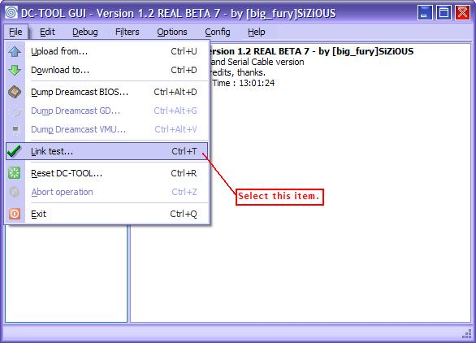
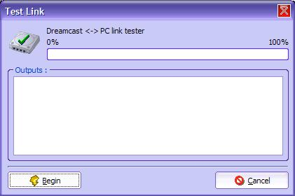
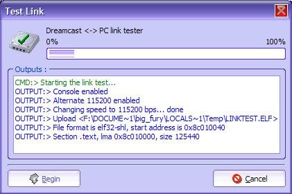
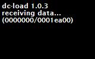
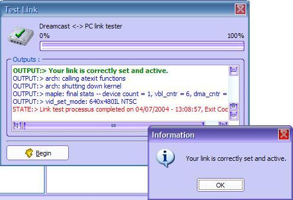

| 3. Test de la liaison |
Ce chapitre permet de tester la liaison.
1) Vérification de la connexion
Avant de commencer, veuillez vérifier les points suivants :
Une fois que vous avez vérifié la check list, vous pouvez tester la connexion.
2) Premier lancement de DC-TOOL GUI
Voir le chapitre Première utilisation de DC-TOOL GUI.
3) Lancer le test
Une fois les Splash Screen passé (l'écran de démarrage avec le logo), rendez vous dans le menu Fichier. Sélectionnez l'élément de menu Test de la liasion.

Une fois que vous aurez cliqué sur cet élément, vous aurez une nouvelle boîte de dialogue :

Pour lancer le test, cliquez
simplement sur Commencer (Begin).
La barre de progression va se remplir, puis se vider etc : Ceci car le fichier
permettant de tester la liaison est un ELF, et les fichiers ELF contiennent
des sections : Toutes les sections sont transmisent à la chaine, mais
indépendement. D'ou cet effet de remplissage/vidage.

Voici le résultat sur Dreamcast :

Une fois fini le transfert, vous devez obtenir :

Bravo! Vous avez configuré correctement votre connexion.
Note : Si vous cliquez sur Annuler lors du transfert, vous devrez redémarrer votre Dreamcast, si et seulement le transfert a commencé. Ceci car DC-LOAD ne supporte pas malheuresement l'arrêt de transfert.